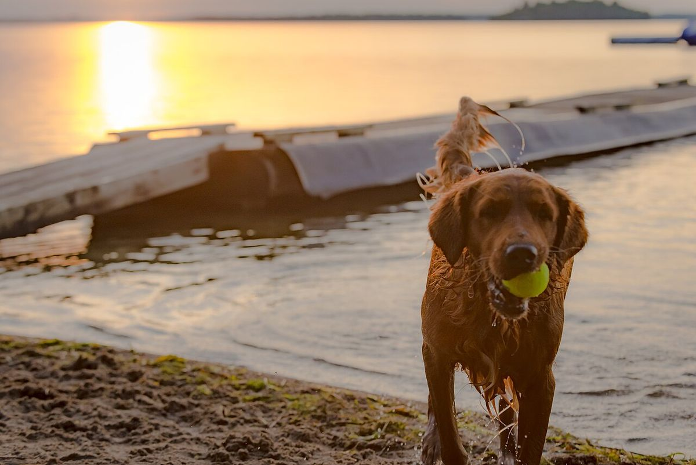
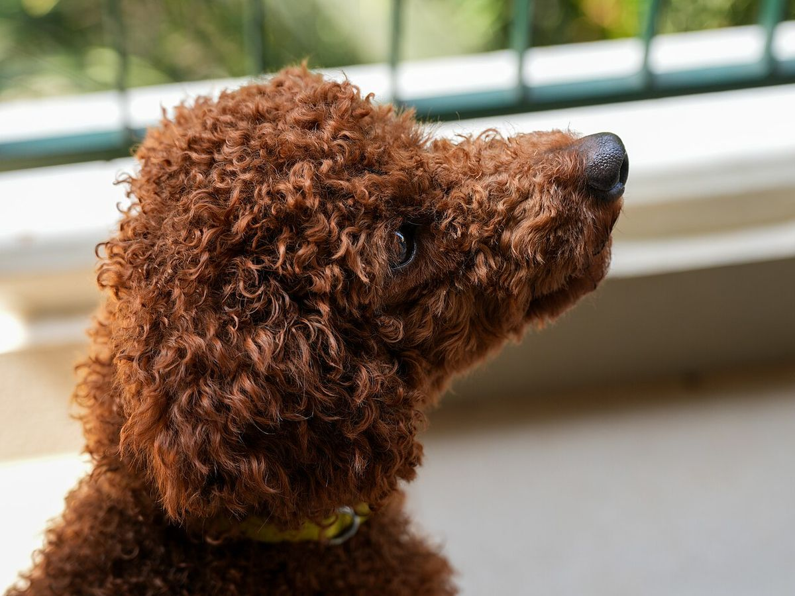
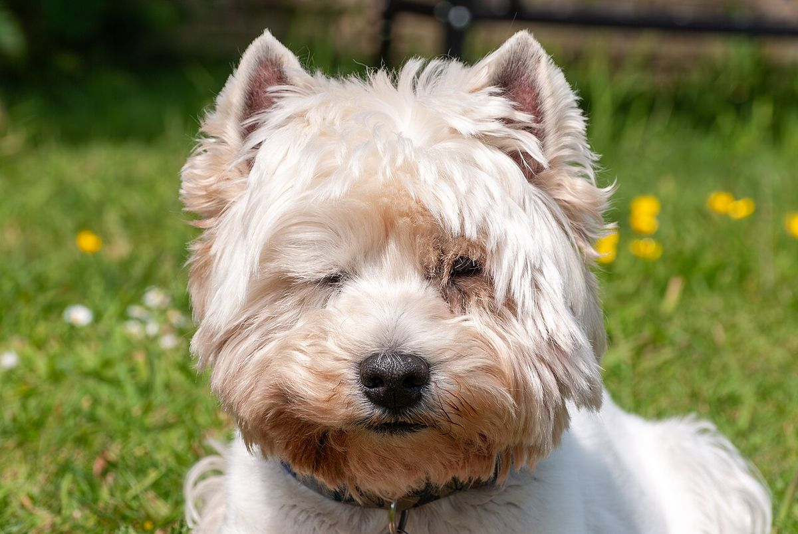
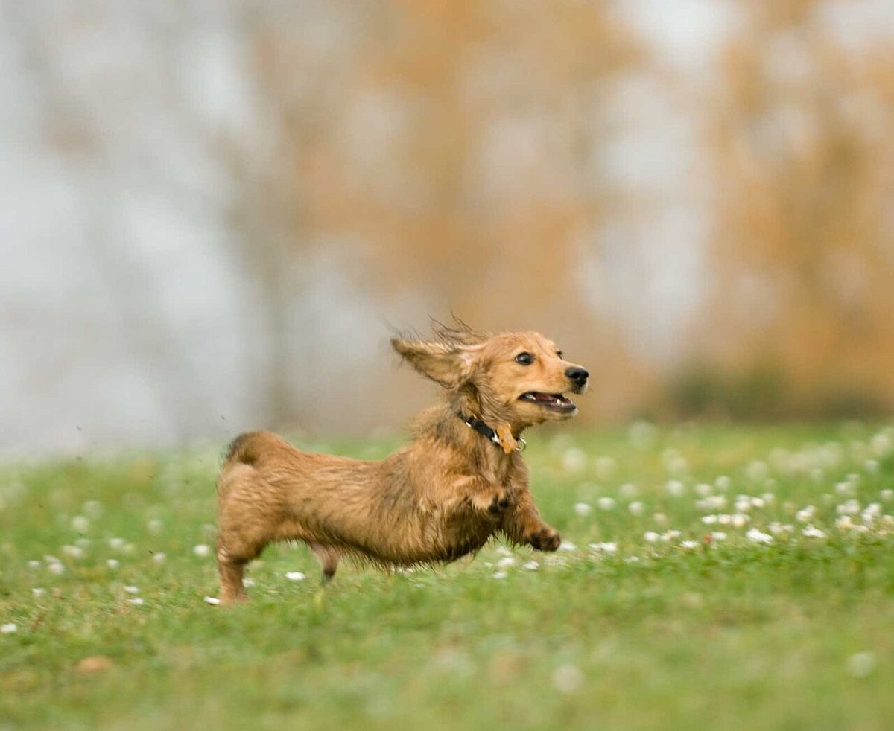
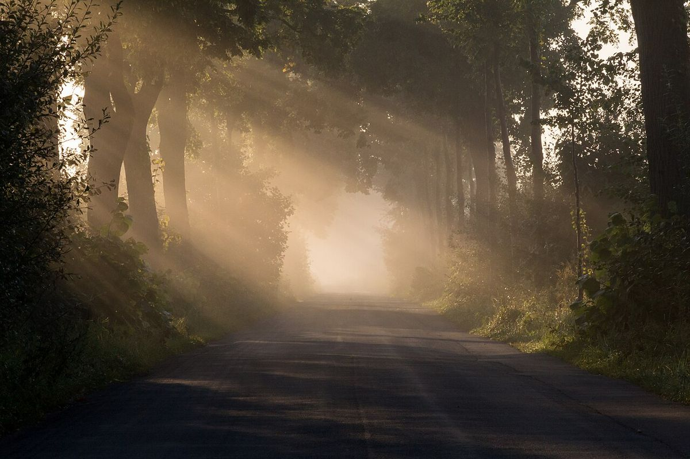
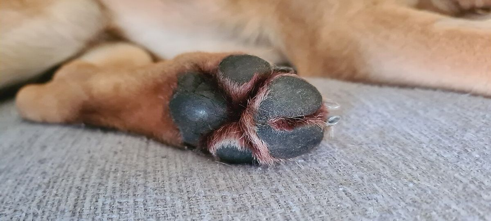
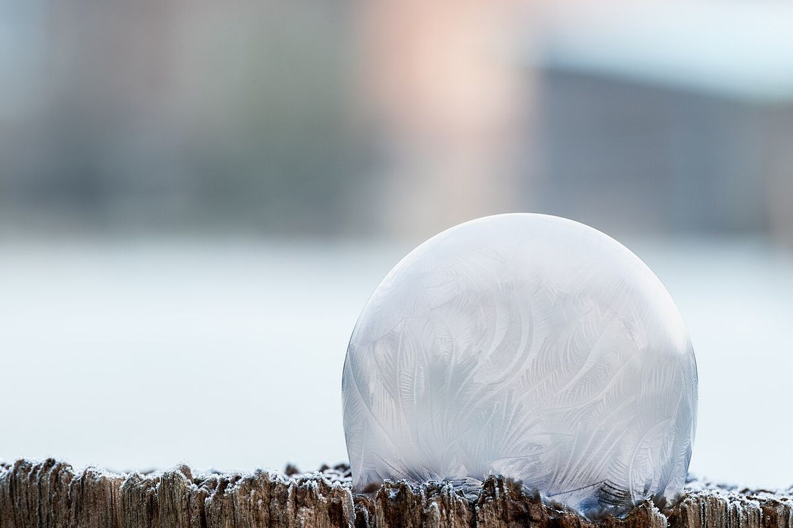

制作側のコンセプト案
空の下、気持ちよく帰ろう
高知市のトリミングサロン DogSalon SOL
※このキャッチコピーは制作側の案です。
大切な家族を、やさしく迎えるサロン
※この見出しは制作側の案です。
DogSalon SOL は、高知市一宮西町にあるトリミングサロンです。
お店の最新の様子は、Instagramでもご覧いただけます。
営業時間や料金などの詳しい内容は準備中です。お電話かInstagramでお問い合わせください。
写真で感じる、サロンのイメージ




※写真はイメージです。
光と空気のイメージ




横にスクロールできます →
ご相談・ご予約は、お電話かInstagramから
予約方法の詳細は準備中です。ワンちゃんのことで気になる点があれば、まずはお気軽にお問い合わせください。
この紹介とコンセプトは、サイト制作側が店名の響きから連想して作成した案です。お店の公式な理念や店名の由来を示すものではありません。